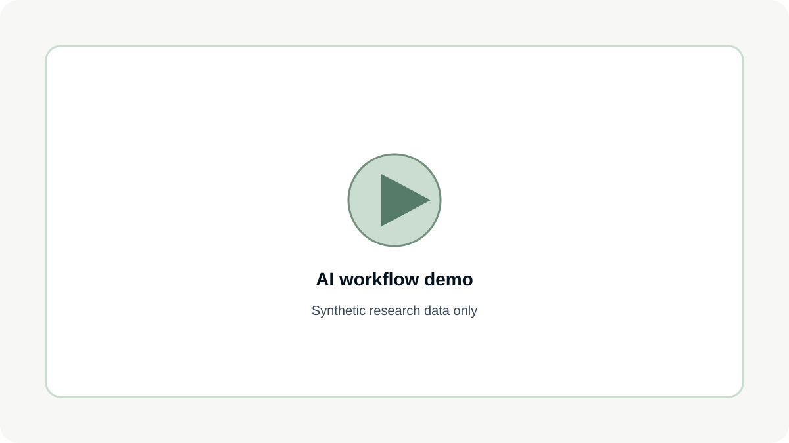

AI-supported briefing
Briefing is transcribed and structured to create clear research context.
I design and refine a workflow that applies AI support where it creates the most leverage — reducing repetitive work and manual processing — so more time can be invested in interpretation, deep dives and overall research quality.
AI accelerates selected steps of the workflow. The real value is the time it returns — so it can be reinvested in interpretation, deep dives and research quality.
Briefing is transcribed and structured to create clear research context.
Structured context becomes the basis for a first draft.
Prompts support faster quantitative analysis and chart preparation.
AI reduces manual steps and repetitive tasks, delivering results up to ~4× faster — so more time can go to interpretation and synthesis.
Short screencast using a synthetic dataset. No confidential company or customer data shown.

No confidential company or customer data is shown.
This workflow uses reproducible calculations rather than opaque outputs.